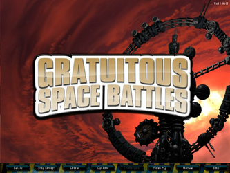

Gratuitous Space Battles
Dieser Artikel wurde für die folgenden Ubuntu-Versionen getestet:
Ubuntu 16.04 Xenial Xerus
Zum Verständnis dieses Artikels sind folgende Seiten hilfreich:
Gratuitous Space Battles  ist eine kommerzielle Raumschlacht-Simulation. Vor dem jeweiligen Gefecht trifft der Spieler eine Reihe von Entscheidungen die den Ausgang beeinflussen. So bestimmt er die Anzahl und Bauart der verwendeten Raumschiffe, bestimmt deren Bewaffnung und erteilt taktische Befehle. Während der Schlacht zwischen den gegnerischen Flotten kann der Spieler nicht eingreifen...
ist eine kommerzielle Raumschlacht-Simulation. Vor dem jeweiligen Gefecht trifft der Spieler eine Reihe von Entscheidungen die den Ausgang beeinflussen. So bestimmt er die Anzahl und Bauart der verwendeten Raumschiffe, bestimmt deren Bewaffnung und erteilt taktische Befehle. Während der Schlacht zwischen den gegnerischen Flotten kann der Spieler nicht eingreifen...
GSB kann im Einzelspieler- oder Mehrspielermodus gespielt werden. Eine Highscore-Liste ist im Netz einsehbar. Der Code für den Mehrspielermodus wurde beim Erwerb der Software übermittelt.
|  | |
| Hauptmenü | Tutorial |
Installation¶
Desura¶
Nach dem Erwerb des Spiels über die Internetseite oder den Client kann das Spiel installiert [3] und über diesen gestartet werden.
The Humble Indie Bundle #4¶
Aus der Aktion The Humble Indie Bundle #4 die Datei GSB-final.sh herunterladen und Ausführrechte [1] setzen. Als nächstes die Installation einleiten [2] und das Spiel nach ~/Spiele/GSB installieren:
./GSB-final.sh
Nach erfolgreichem Einspielen des Spiels ist es unter "Anwendungen -> Spiele -> Gratuitous Space Battles" zu finden.
Menü¶
| Menü | |
| Menüpunkt | Beschreibung |
| "Battle" | Mission starten und die Rasse ändern. |
| "Ship Design" | Schiffseditor. |
| "Online" | Mehrspielermodus starten. |
| "Options" | Einstellungen zur Darstellung, der Musik und dem Spielverhalten vornehmen. |
| "Challenges" | Liste der Weltraumschlachten. |
| "Fleet HQ" | Erweiterungen für die Flotte kaufen. |
| "Manual" | Handbuch aufrufen. |
| "Exit" | Spiel beenden. |
| Key | Serverliste |
Erweiterungen¶
Auf der Herstellerseite gibt es lediglich Erweiterungen für Windows käuflich zu erwerben. Um diese unter Ubuntu verwenden zu können dieser Anleitung folgen.
Multiplayer¶
Nach dem Start des Spiels aus dem Menü den Punkt "Online" auswählen und den Schlüssel, welchen man beim Erwerb der Software erhalten hat eintragen. Diesen kann man sich ggf. erneut zusenden lassen.

Infobox¶
| Gratuitous Space Battles | |
| Originaltitel: | Gratuitous Space Battles |
| Genre: | Simulation |
| Sprache: |     |
| Veröffentlichung: | 2011 |
| Publisher: | Positech Games |
| Systemvoraussetzungen: | Prozessor mit >1.5 GHz / >1GB RAM / 3D-Grafikkarte >128MB RAM |
| Strichcode / EAN / GTIN: | - |
| Läuft mit: | nativ |
- Erstellt mit Inyoka
-
 2004 – 2017 ubuntuusers.de • Einige Rechte vorbehalten
2004 – 2017 ubuntuusers.de • Einige Rechte vorbehalten
Lizenz • Kontakt • Datenschutz • Impressum • Serverstatus -
Serverhousing gespendet von